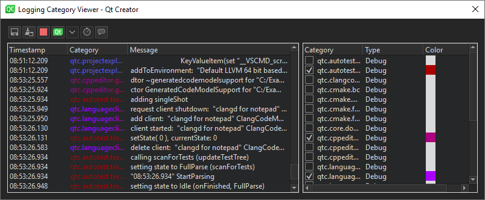

Inspect internal logs
You can inspect internal log messages of Qt Creator at runtime without having to restart it or configure the logging rules. Log messages are helpful when you develop Qt Creator, need to investigate some problem you are facing, or want to take a look behind the scenes.
To open the log viewer and start collecting log information, select Tools > Debug Qt Creator > Show Logs.

The viewer displays log messages from the selected logging categories. If you have logging rules defined, they might be listed on startup. Otherwise, the list of categories is extended while you are using Qt Creator.
Note: Messages are not cached, so the viewer displays only messages that are recorded after you enabled a category.
View logs
To enable logging categories, select them in Category. Type specifies the minimum level of messages to display from the respective category. To change the minimum level, double-click the type and select another value.
If you enable more than one category, you can specify different colors for the messages in each category. Double-click the value of Color to pick colors for the categories.
To store information about the currently enabled categories, select Save Enabled as Preset in the context-menu. To load the saved information, select Update from Preset.
To save the content of the displayed messages, select (Save Log). To copy all or selected messages, select Copy All or Copy Selected Logs in the context menu.
To clean the content of displayed messages select  (Clear).
(Clear).
To temporarily stop logging, select (Stop Logging). To continue logging, select  (Start Logging).
(Start Logging).
By default, logging categories and messages coming directly from Qt are disabled. To display them, select (Toggle Qt Internal Logging).
New messages automatically scroll the message display to the bottom. To stop automatic scrolling, toggle  (Auto Scroll).
(Auto Scroll).
By default, messages are listed with a timestamp, without message type. To hide and show this information, toggle (Timestamps) and (Message Types).